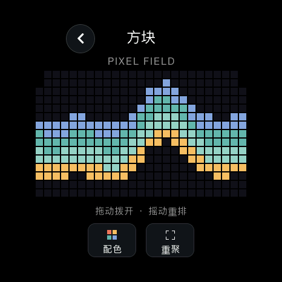
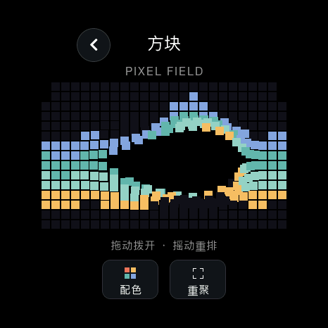
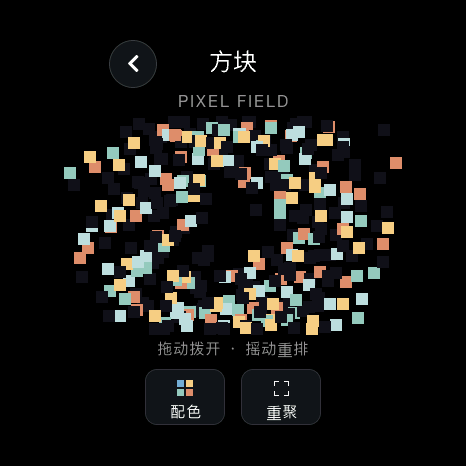
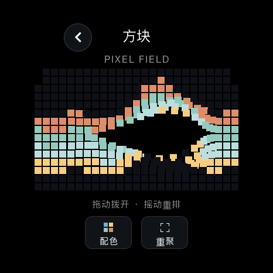

<!doctype html><html lang="zh-CN"><meta charset="utf-8"><meta name="viewport" content="width=1080"><title>像素互动</title><link rel="stylesheet" href="style.css">
    <main class="poster four" data-number="10"><header><div class="brand">soRound OS <span>明天 · 正式版见</span></div><div class="kicker">09 / 新玩法 · 方块</div><h1>手痒的时候，<br>拨两下。</h1><p class="sub">拖一拖会弹开，摇一摇会重排；玩完再一键重聚。</p></header><div class="content"><div class="gallery cols-2"><figure class=""><figcaption>轻轻排好</figcaption></figure><figure class=""><figcaption>手指拨开</figcaption></figure><figure class=""><figcaption>摇一摇重排</figcaption></figure><figure class=""><figcaption>换一种配色</figcaption></figure></div></div><footer><span>原生 UI 渲染 · 触摸、摇动与配色的示例状态</span><span>10 / 10.23</span></footer></main></html>